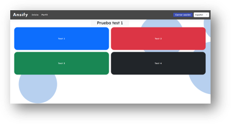

Resumen de la Aplicación
En mi Trabajo de Fin de Grado, desarrollé una aplicación web similar a Kahoot. La aplicación permite a los usuarios crear y participar en cuestionarios interactivos en tiempo real. Los usuarios pueden crear sus propios cuestionarios y competir en ellos, con una puntuación en tiempo real y una experiencia de juego divertida y educativa.
Tecnologías usadas
| Nombre de la Tecnología | Autor | Uso Principal |
|---|---|---|
| Angular | Desarrollo de aplicaciones web frontend | |
| Node.js | Node.js Foundation | Entorno de ejecución de JavaScript en el lado del servidor |
| Prisma ORM | Prisma | Mapeo objeto-relacional (ORM) para aplicaciones Node.js |
| Socket.io | Socket.io | Comunicación bidireccional en tiempo real entre el cliente y el servidor |
| Bootstrap | Diseño y maquetación de sitios web responsivos | |
| CSS | W3C | Estilización y diseño de páginas web |
| HTML | W3C | Estructura y contenido de páginas web |
| Express.js | TJ Holowaychuk | Framework web para aplicaciones Node.js |
| PostgreSQL | PostgreSQL Global Development Group | Sistema de gestión de bases de datos relacional |
| Postman | Postman | Pruebas de API y desarrollo de API |
| Visual Studio Code | Microsoft | Editor de código fuente multiplataforma |
| JSON | Douglas Crockford | Formato de intercambio de datos |
| TypeScript | Microsoft | Superset de JavaScript con tipos estáticos |